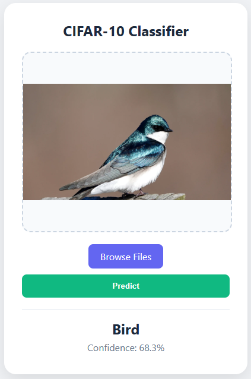
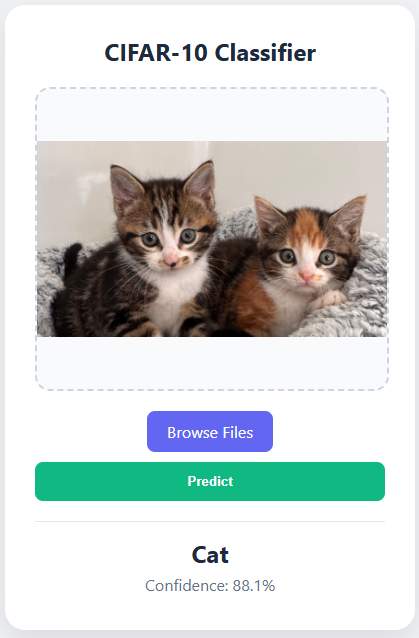

Finals - Lab Exercise 7 (Web App using CIFAR-10)
Description: A comprehensive deployment project integrating the optimized 10-class CIFAR-10 Convolutional Neural Network into a Flask web application, allowing users to upload images for real-time, multi-category classification.
Objectives/Purpose:
- To upgrade the existing Flask application architecture to support multi-class prediction rather than simple binary logic.
- To map a predefined list of string categories to the numeric index outputted by the model's Softmax layer.
- To implement dynamic image resizing during preprocessing by programmatically extracting the model's expected input shape (32x32).
- To evaluate the performance of the serialized CIFAR-10 TensorFlow Lite model in a web environment.
Key Features
- Dynamic Multi-Class Inference: Adapted the backend logic to handle an output tensor containing 10 distinct probability distributions, correctly identifying the most probable class using NumPy's argmax function.
- Automated Tensor Extraction: Rather than hardcoding the 32x32 resolution into the Python script, the preprocessing function securely extracts the required dimensions directly from the TFLite interpreter's metadata, preventing dimension mismatch errors.
- Unified User Interface: Repurposed the responsive Jinja2 template to process and display results cleanly, applying string manipulation (capitalization) to the raw class names for better UI presentation.
Important Code Blocks
1. Dynamic Preprocessing & Class Mapping
This block defines the 10 possible categories and uses the model's internal input_details to safely extract the exact width and height needed for the uploaded image.
from PIL import Image
import numpy as np
# CIFAR-10 class names from the training notebook
CLASS_NAMES = ['airplane', 'automobile', 'bird', 'cat', 'deer', 'dog', 'frog', 'horse', 'ship', 'truck']
def preprocess_image(image_path):
img = Image.open(image_path).convert("RGB")
# Dynamically extract target shape (32x32) from the model's input details
_, height, width, _ = input_details[0]['shape']
img = img.resize((width, height))
# Normalize pixel values to [0, 1]
img_array = np.array(img).astype(np.float32) / 255.0
return np.expand_dims(img_array, axis=0)2. Multi-class Softmax Interpretation
Instead of evaluating against a 0.5 threshold (like in the binary Dog vs. Cat model), this logic finds the index of the highest value in the output array and matches it to the string label array.
# Predict
interpreter.set_tensor(input_details[0]['index'], input_data)
interpreter.invoke()
output = interpreter.get_tensor(output_details[0]['index'])[0]
# Handle CIFAR-10 Multi-class Logic
idx = np.argmax(output)
prediction = CLASS_NAMES[idx].capitalize()
confidence = float(output[idx]) * 100Screenshots & Results


Observations:
- The TFLite model successfully processes the multi-class outputs rapidly within the Flask server. The use of
np.argmax()ensures accurate index retrieval, allowing the frontend to dynamically display diverse categories like "Frog," "Airplane," or "Ship" alongside their confidence scores.
Tools & Technologies
- Languages: Python 3, HTML5, CSS3
- Libraries/Frameworks: Flask, TensorFlow Lite (Inference API), NumPy (argmax probability distribution), PIL (Image Processing)
- Platforms: Localhost Web Server
Challenges & Solutions
Problems Encountered: The primary challenge was migrating the prediction evaluation logic. In the previous Lab Exercise (Dogs vs. Cats), the model had a single output node that provided a single probability. The CIFAR-10 model outputs a 1D array of 10 probabilities, meaning a simple if output > 0.5 conditional statement would trigger an error.
How I Solved Them: I utilized NumPy's argmax() function to scan the array of 10 probabilities and return the index of the highest value. I then established a CLASS_NAMES array containing the 10 labels in the exact order they were trained, allowing me to use the index to retrieve the correct human-readable string to send to the HTML frontend.
Learning Reflection
What I Learned: I solidified my understanding of how Softmax activation functions operate in production environments. Managing arrays of probabilities requires strict mapping between the model's output nodes and the application's data structures.
Skills Gained: Multi-class inference handling, advanced NumPy array operations, and developing modular Python backend functions for dynamic image processing.